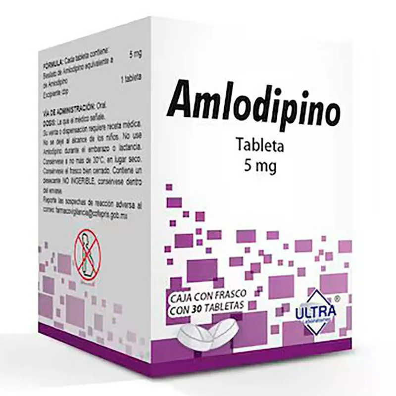
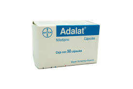

Inhibición de los canales de calcio tipo L: Los bloqueadores de los canales de calcio se unen a los canales de calcio tipo L en las células del músculo liso vascular y el músculo cardíaco. Al bloquear estos canales, se reduce la entrada de calcio en las células durante la fase de despolarización del potencial de acción
Efectos Hemodinámicos:
Hipertensión arterial: Los bloqueadores de los canales de calcio son eficaces en la reducción de la presión arterial y se utilizan comúnmente en el tratamiento de la hipertensión.
Angina de pecho: Ayudan a aliviar el dolor en el pecho (angina) al mejorar el flujo sanguíneo hacia el corazón y reducir la demanda de oxígeno del miocardio
Arritmias: CLos bloqueadores de los canales de calcio, especialmente los no dihidropiridínicos, son útiles en el tratamiento de ciertas arritmias al reducir la frecuencia cardíaca y mejorar la conducción eléctrica en el corazón
Fenómeno de Raynaud: Estos medicamentos pueden ser utilizados para tratar la enfermedad de Raynaud, una afección que causa espasmos en los vasos sanguíneos de las manos y los pies
Precauciones Adicionales
Tabletas/Vía oral
Amlodipino:
Para el tratamiento de hipertensión y angina, la dosis inicial de amlodipino es de 5 mg una vez al día, pudiendo aumentarse hasta un máximo de 10 mg según la respuesta del paciente. En enfermedad arterial coronaria, la dosis recomendada también es de 5-10 mg diarios, siendo 10 mg la más comúnmente requerida. No se necesitan ajustes cuando se combina con diuréticos tiazídicos, betabloqueadores o IECA. En ancianos y pacientes con insuficiencia renal, se usan las mismas dosis, ya que es bien tolerado y no dializable. En insuficiencia hepática se deben tomar precauciones especiales.
Nifedipino:
El tratamiento debe ajustarse según cada paciente. Se inicia con 10 mg cada 8 horas, y puede aumentarse hasta 60 mg diarios. Para uso crónico, se recomiendan presentaciones de liberación prolongada. En crisis hipertensiva, se puede administrar el contenido de la cápsula en gotas, con monitoreo estricto. No debe usarse en eventos cerebrovasculares agudos. En niños solo se usa bajo estricta supervisión médica. Para el síndrome de Raynaud, se recomienda 10 mg cada 8 horas. Las cápsulas deben tragarse enteras con agua y sin jugo de toronja. Si se suspende el tratamiento, debe hacerse de forma gradual.
Amlodipino
Amlodipino es generalmente bien tolerado. En estudios clínicos controlados en pacientes con hipertensión o angina, los efectos secundarios más comunes incluyen cefalea, mareo, somnolencia, palpitaciones, rubor, dolor abdominal, náuseas, edema y fatiga. No se han observado alteraciones de laboratorio clínicamente relevantes asociadas al fármaco. En la experiencia post-comercialización, se han reportado efectos menos frecuentes como: leucopenia, trombocitopenia, hiperglucemia, insomnio, cambios de humor, trastornos visuales, tinnitus, tos, disnea, rinitis, estreñimiento, hiperplasia gingival, pancreatitis, alopecia, espasmos musculares, disfunción eréctil, ginecomastia, trastornos urinarios, entre otros. También se han descrito raramente reacciones alérgicas (prurito, erupciones, angioedema, eritema multiforme), hepatitis colestásica y elevaciones de enzimas hepáticas, algunos casos graves que requirieron hospitalización. Como con otros bloqueadores de canales de calcio, rara vez se han reportado infarto de miocardio, arritmias (bradicardia, taquicardia ventricular, fibrilación auricular) y dolor torácico, sin poderse descartar la influencia de la enfermedad de base. En cuanto a la seguridad a largo plazo: Carcinogenicidad: No se encontró evidencia de carcinogénesis en estudios en roedores. Mutagenicidad: No se detectaron efectos genéticos ni cromosómicos. Fertilidad: No se observaron efectos adversos sobre la fertilidad en ratas con dosis hasta 8 veces mayores que la dosis humana máxima recomendada.
Nifedipino
dihidropiridínicos Amlodipino Nifedipino (Marca ADALAT) Felodipino (Marca EUTENS) Lacidipino (Marca Lacipil) No dihidropiridínicos Verapamilo (Marca Dilacoran) Diltiazem (Marca ANGIOTROFIN)